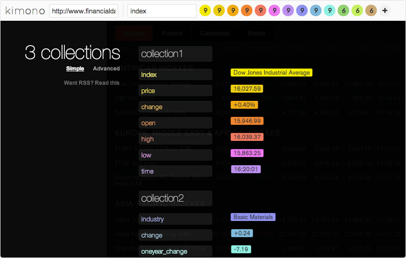
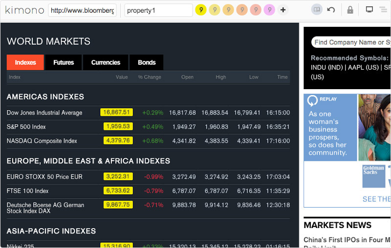
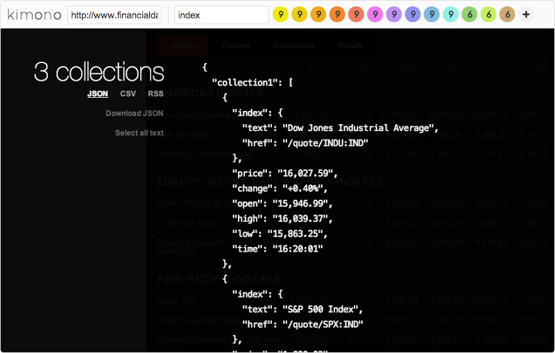

API-Creation App Running on Heroku Gives Developers Easy Access to Data
Kimono Labs enables anyone to turn websites into structured APIs to build powerful, next-generation apps
No API? No problem! This is music to the ears of developers building data-hungry apps for the web and connected devices from smartphones to watches. Without an API available from a data source, developers must spend valuable time building web scrapers to pipe data from a website into their app. By definition, this is an unstable solution that requires extra development effort to host, monitor, maintain. On the other side of the equation, this means that web servers are continuously being bombarded with redundant high frequency requests by thousands of bots, not all of them with good intentions. Scraping is painful for both parties.
A Mission to API-ify the Web
The founders of Kimono Labs felt that pain. With backgrounds in applied math and physics, they wanted to make it easy for developers (and non-developers) to build their own APIs to access data responsibly. And they wanted to make it safer for data providers to allow access to their data in a sustainable, controlled way. The company’s mission is to create APIs where they don’t exist, allowing users to produce structured, machine-readable data for next generation apps and connected devices.

To extract data with Kimono, developers don't need to write code, install software, or upgrade their system. They simply add a Chrome extension of bookmarklet to their browser that helps them identify what data they want in their API, and Kimono does the rest. Kimono’s “intelligent scraper” means developers don’t need to worry about website types, data formats, or models, or underlying structure — Kimono learns from the user’s clicks and figures out the right data model.
Webmasters have to stay vigilant against the onslaught of crawlers on their site. Kimono helps reduce the load on their servers — reducing tens of thousands of requests to a handful of requests, executed responsibly.
Civilizing the Data Frontier on Heroku
Kimono Labs’ founders chose to launch their service on Heroku so they could get the basics live very quickly while they tested the market. Running their app on Heroku allowed them to fully focus their time and energy on developing their vision, user experience, and building awareness in the marketplace.
What was amazing about Heroku in the early days was that it helped us get something up and running very quickly without worrying about orchestrating or managing infrastructure.
Pratap Ranade, Co-Founder, Kimono Labs

As they’ve scaled, the team has been impressed with Heroku’s ability to support their needs, in particular the responsiveness of customer support. They’ve come to rely on Heroku and run much of their service on the platform, including their web app and components of their crawlers.
We run a lot of our services on Heroku. It’s easier and takes up less time, letting our team focus on the hard data extraction problems that we’re solving.
Pratap Ranade, Co-Founder, Kimono Labs
Kimono’s engineering team loved the core Heroku experience of easily scaling up or down as needed. The team uses the Heroku Toolbelt CLI client for creating and managing their apps, including running logs from the command line. Also, Heroku’s flexibility allows the team to respond quickly to any issues that may arise, and reconfigure dynos on the fly while easily keeping the service up and running. The team built their app in Javascript using Node.js and use a variety of Heroku Add-ons that give them additional functionality, including New Relic APM for monitoring and tuning their app, Heroku Scheduler, SSL encryption, and Redis Cloud to manage their Redis instances.
Data is mission-critical for us, so the fact that Heroku works well with databases, and we can add on monitoring tools, is really valuable.
Pratap Ranade, Co-Founder, Kimono Labs
App Experience
Kimono Labs has made creating an API easier than ever. The company has received lots of kudos on their simple and visual point-and-click user experience, allowing users to extract data straight from their browser.
Users first install the Kimono Chrome extension. After navigating a web page that displays the data they want to extract, the user clicks on a button in their Chrome toolbar to pull up the Kimono toolbar. The user then clicks on the data they want and Kimono streamlines the process by intelligently recognizing patterns in web data and building a data model. It can even crawl multiple pages and log in on behalf of the user. Kimono then hosts the API and data in the cloud and users can access output in JSON and CSV files.

Users can use the extracted data in numerous ways. Once they have the API, they can set up a schedule for running it or call it from code snippets in all the modern languages. Users can also set up email alerts to notify them of any changes. Web hooks will detect any changes in the source data from the API will send a POST request to a user’s app server, allowing users to build fully functional apps on top of Kimono. A new feature allows users to modify their API endpoints with custom JavaScript functions, which run in the Kimono cloud to process and transform data. For non-technical users, an app builder feature allows them to create mobile web apps or embeddable HTML widgets powered by data from Kimono APIs without writing any code. Users can also install a Kimono add-on for Google sheets, letting them access live data from Kimono APIs from within a spreadsheet. Integrations with Wordpress and Zapier are also available.
What can a Kimono API do for an app? Kimono users have leveraged their Kimono API to create a full spectrum of data-rich experiences, including official mobile apps for the world’s largest democratic election in India, startup investment trends, real estate deals, interactive bike maps, world cup alerts for smart watches, and more. The Kimono team also builds APIs for their user base on hot topics such as March Madness and Sochi Olympics. Check out the Built With Kimono showcase to see the variety of data-rich apps using Kimono. The opportunities for creativity are endless.
More Stories


Have a question? Give our sales team a call: +1 (866) 278-1349.